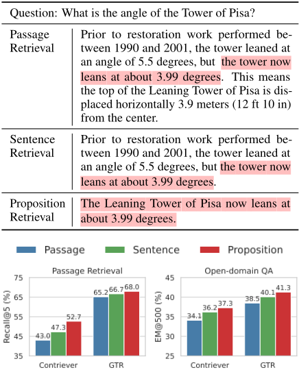
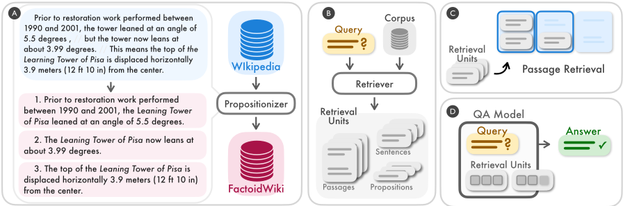
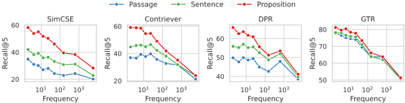
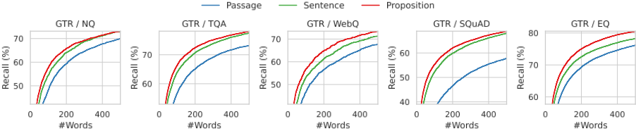
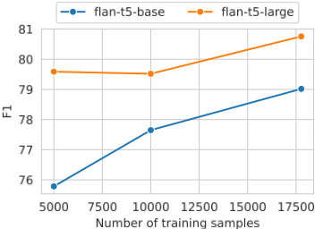
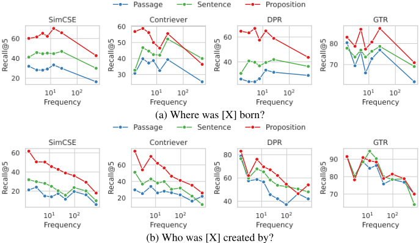
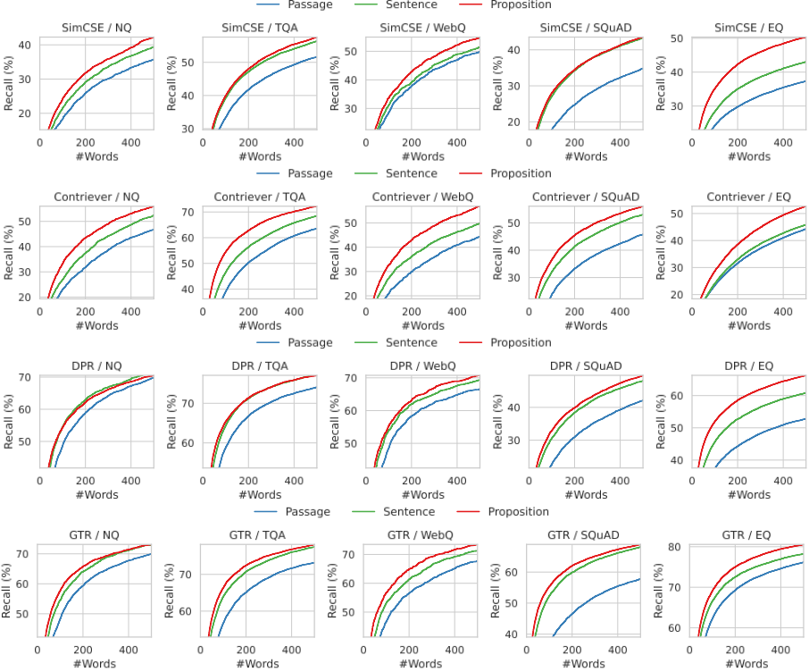

Dense X Retrieval：我们应该使用什么检索粒度？
论文研究 dense retrieval 中一个常被忽视的设计决策：推理时索引检索语料应采用什么粒度（文档、passage、sentence）。作者提出以 proposition（原子命题）作为新检索单元——每条命题封装一个独立 factoid、简洁且自包含（指代已消解），并用 GPT-4 生成数据蒸馏 Flan-T5 训练的 Propositionizer，将 600 万英文 Wikipedia 页面切分为 2.57 亿条命题，构建 FACTOIDWIKI。在五个开放域 QA 数据集、四种双编码器 retriever 上的实验显示：proposition 级索引在检索与下游 QA 上均优于 passage 和 sentence 级，无监督 retriever 的 Recall@20 平均提升 +10.1，且在长尾实体查询上优势最大。在固定 token 预算下，用 proposition 构造 RAG 提示上下文使 LLaMA-2-7B 的 EM@500 最高提升 +4.1，意味着同等性能下输入更短、推理更快。核心结论：不更新 retriever 参数、仅调整索引与上下文粒度，即可作为正交且低成本的 RAG 提效手段。
使用 dense retriever 时，以什么检索单元（document、固定长度 passage、sentence）切分和索引语料是一个常被忽视的设计选择；论文要回答：检索粒度如何影响检索性能与下游 QA 性能，以及在固定计算预算下，retrieval-augmented LM 的提示中应使用什么粒度的检索单元。
提出 proposition 作为新检索单元：文本中的原子表达，每条封装一个独立 factoid，简洁、自包含。构建 FACTOIDWIKI：先用含 proposition 定义与 1-shot 示例的指令 prompt GPT-4 生成 42k 段落-命题种子对，再两步蒸馏微调 Flan-T5-large 得到 Propositionizer，将 Wikipedia 切分为三种粒度（100 词 passage、sentence、proposition）。在 NQ/TQA/WebQ/SQuAD/EntityQuestions 五个数据集上，用 SimCSE、Contriever、DPR、GTR 四种双编码器 retriever 对比三种粒度的 Passage Recall@k（sentence/proposition 级按 passage 内最大相似度映射回 passage）；下游分别用 Fusion-in-Decoder reader 和 LLaMA-2-7B（4-shot in-context learning）在固定 token 预算（l=100/500）下评测 EM，并分析金答案在 top-l 词中的召回密度。
无监督 retriever 上，proposition 检索相对 passage 检索的 Recall@20 平均提升 +10.1，监督 retriever 平均提升 +2.7；SimCSE 与 Contriever 的 Recall@5 平均提升 +12.0 和 +9.3（相对提升 35.0% 和 22.5%）
跨任务泛化场景优势显著：DPR 在 EntityQuestions 上 Recall@5 相对提升 25%，GTR 在 SQuAD 上相对提升 16%；对长尾（低频）实体查询的增益最大
用 LLaMA-2-7B 做 RAG，在 EM@500 下用 proposition 替代 passage，SimCSE/Contriever/DPR/GTR 分别提升 +4.1/+3.2/+2.7/+2.8；用 sentence 替代 passage 分别提升 +2.4/+2.1/+2/+1.6
固定词数预算下 proposition 检索的金答案召回率最高，最大优势出现在 100-200 词区间（约 10 条 proposition、5 句或 2 个 passage）；词数增大后三种粒度召回趋于收敛
Propositionizer 命题分解 F1 达 0.822；600 万页面切分为 4100 万 passage、1.14 亿句子、2.57 亿命题，平均每 passage 6.3 条命题、每句 2.3 条
分解整个 Wikipedia 约需 500 GPU 小时（NVIDIA P100）；FACTOIDWIKI 纯索引约 768GB，分 8 个 shard 做近似最近邻检索
以往工作通过数据增强、持续预训练、任务感知训练或多向量检索（如 ColBERT、DensePhrase）改进 retriever 模型本身；本文不更新 retriever 参数，首次系统研究推理时索引粒度这一被忽视的设计选择，证明按 proposition 粒度索引是正交、简单有效的泛化提升策略。与 Sarthi et al. (2024) 用生成式摘要作为补充检索单元不同，本文用 proposition 改善长尾实体查询，两者互补。
相关度级别：high
命中能力域：3.1 上下文工程与记忆 | 3.5 评测与可靠使用
理由：直接命中 3.1 上下文工程与记忆：论文核心正是 RAG/检索增强中语料索引粒度与提示上下文的组织方式，证明更细粒度、自包含的检索单元能在固定 token 预算下提高上下文信息密度，这是团队知识库问答与 RAG 流程中上下文组织的关键设计决策。同时命中 3.5：论文给出固定计算预算下的成本-效果实证权衡（更短输入、更快推理），并提供可复用的评测协议（Passage Recall@k、EM@l tokens）。对提示工程（3.2）仅有间接参考，核心贡献在上下文工程与检索侧。
建议动作：深入精读并做内部分享
arXiv:2312.06648v3 [cs.CL] 4 Oct 2024
EMNLP 2024 主会议
Dense X Retrieval：我们应该使用什么检索粒度？
Tong Chen ♣ * Hongwei Wang ♢ Sihao Chen ♡ Wenhao Yu ♢ Kaixin Ma ♢ Xinran Zhao ♠ Hongming Zhang ♢ Dong Yu ♢
♣ 华盛顿大学 ♢ 腾讯 AI Lab ♡ 宾夕法尼亚大学 ♠ 卡内基梅隆大学
稠密检索（dense retrieval）已成为开放域自然语言处理（NLP）任务中获取相关上下文或世界知识的一种重要方法。当我们在推理阶段于检索语料库上使用学习得到的稠密检索器时，一个经常被忽视的设计选择是语料库被索引时所采用的检索单元，例如文档、段落或句子。我们发现，检索单元的选择会显著影响检索任务和下游任务的性能。不同于使用段落或句子的典型方法，我们为稠密检索引入了一种新颖的检索单元——命题（proposition）。命题被定义为文本中的原子化表达，每个命题封装一个独立的事实性信息（factoid），并以简洁、自包含的自然语言形式呈现。我们对不同的检索粒度进行了实证比较。我们的实验表明，在检索任务中，以命题等细粒度单元对语料库进行索引显著优于段落级单元。此外，在给定特定计算预算的情况下，使用细粒度检索单元为检索增强语言模型构建提示（prompt）能够提升下游问答（QA）任务的性能。
稠密检索器（dense retriever）是开放域自然语言处理（NLP）任务中用于访问外部信息源的一类流行技术（Karpukhin et al., 2020）。在使用学习得到的稠密检索器从语料库中检索之前，我们必须做出的一个至关重要的设计决策是检索单元（retrieval unit）——即我们在推理时对检索语料库进行切分和索引所采用的粒度。在实践中，检索单元的选择，例如文档、固定长度的段落块或句子等，通常是根据稠密检索模型的实例化或训练方式预先确定的（Lewis et al., 2020; Lee et al., 2021a; Santhanam et al., 2022; Ni et al., 2022）。
* 本工作完成于腾讯 AI Lab（贝尔维尤）实习期间。
github https://github.com/chentong0/ factoid-wiki
| Question: What is the angle of the Tower of Pisa? | Question: What is the angle of the Tower of Pisa? |
|---|---|
| Passage Retrieval | Prior to restoration work performed be- tween 1990 and 2001, the tower leaned at an angle of 5.5 degrees, but the tower now leans at about 3.99 degrees. This means the top of the Leaning Tower of Pisa is dis- placed horizontally 3.9 meters (12 ft 10 in) from the center. |
| Sentence Retrieval | Prior to restoration work performed be- tween 1990 and 2001, the tower leaned at an angle of 5.5 degrees, but the tower now leans at about 3.99 degrees. |
| Proposition Retrieval | The Leaning Tower of Pisa now leans at about 3.99 degrees. |
| Question: What is the angle of the Tower of Pisa? | Question: What is the angle of the Tower of Pisa? |

在本文中，我们研究了稠密检索推理中一个被忽视的研究问题——我们应该以何种检索粒度对检索语料库进行切分和索引？我们旨在从两个方面对这一问题进行研究。
1

可以在下游 QA 任务中替换段落。
基于我们的实证实验，我们发现，在推理时选择合适的检索粒度可以成为提升稠密检索器检索性能和下游 QA 性能的一种简单而有效的策略。我们通过表 1 中的开放域 QA 示例来阐述我们的直觉。该示例展示了同一检索器在三种不同粒度下检索到的文本。段落（passage）代表一种上下文更长的较粗检索单元，理论上能够为问题提供更多相关信息。然而，段落往往包含无关的细节（例如表 1 示例中的修复时期和水平位移），这些细节可能会同时干扰检索器以及下游任务中的语言模型（Shi et al., 2023; Yu et al., 2023b）。另一方面，句子级索引提供了一种更细粒度的方法，但并未完全解决该问题（Akkalyoncu Yilmaz et al., 2019; Yang et al., 2020）。这是因为句子仍然可能复杂且为复合句，并且它们通常并不自包含，缺乏判断查询-文档相关性所必需的上下文信息（例如，在表 1 的示例中，"the tower" 是 "Pisa Tower" 的共指）。
为了解决段落或句子等典型检索单元的上述缺陷，我们提出使用命题（proposition）作为稠密检索（dense retrieval）的一种新型检索单元。命题被定义为文本中的原子化表达，每个命题封装一个独立的事实性信息（factoid），并以简洁、自包含的自然语言形式呈现。我们在表 1 中展示了一个命题示例。该命题以自包含的方式描述了有关比萨斜塔当前倾斜角度的信息，并精确回应了问题所查询的内容。我们在 §2 中提供了关于命题的更详细定义与描述。为了验证在稠密检索器推理中使用命题作为检索单元的有效性，我们首先对一份英文维基百科转储数据进行处理和索引，将其中所有文档切分为命题，我们将其称为 FACTOIDWIKI。
我们在五个不同的开放域问答（QA）数据集上进行了实验，实证比较了当维基百科分别以段落、句子以及我们提出的命题进行索引时，四种双编码器（dual-encoder）检索器的性能。值得注意的是，我们的研究结果表明，基于命题的检索优于基于句子和段落的检索，尤其是在泛化能力方面，如 §5 所讨论。这表明命题既紧凑又富含上下文，使稠密检索器能够在获取精确信息的同时保持足够的上下文。相比基于段落的检索，Recall@20 在无监督稠密检索器上的平均提升为 +10.1，在有监督检索器上为 +2.7，尽管这些检索器是直接在段落级检索上训练的。此外，我们观察到，当使用检索增强语言模型时，基于命题的检索在下游 QA 性能上展现出明显优势，如 §6 所述。以更细粒度的单元进行检索，本质上能提供密度更高的问题相关信息。这一发现意味着，在提示（prompt）中使用更细粒度的单元能够以更短的输入长度取得相同的性能，从而使推理时间更短。
我们的主要贡献如下：
2
我们研究的目标是从实证角度理解检索语料库的粒度如何影响稠密检索（dense retrieval）模型的性能。除了常用的检索单元，例如 100 词的段落（Karpukhin et al., 2020）或句子之外，我们提出使用命题（proposition）作为另一种检索单元选择。这里，命题表示文本中意义的原子化表达（Min et al., 2023），其定义遵循以下三条原则。
将命题用作检索单元的想法受到近期一系列工作（Min et al., 2023; Kamoi et al., 2023; Chen et al., 2023a,b）的启发，这些工作在以命题为粒度表示和评估文本语义方面取得了成功。我们通过图 2 左侧的示例展示命题的概念，以及如何将一个段落拆分为一组命题。该段落包含三个命题，每个命题分别对应关于比萨斜塔（the Leaning Tower of Pisa）的一个不同的事实性信息：修复前的倾角、当前的倾角以及水平位移。
在每个命题内部都融入了来自段落的必要上下文，使得命题的含义能够脱离原文被独立解读。例如，在第一个命题中，“该塔”的指代被还原为其完整表述 the Leaning Tower of Pisa。我们期望每个命题恰好描述一个原子事实，因此我们的直觉是，命题适合作为面向信息获取类问题的检索单元。
| # units | Avg. # words | |
|---|---|---|
| Passages | 41,393,528 | 58.5 |
| Sentences | 114,219,127 | 21 |
| Propositions | 256,885,003 | 11.2 |
| | # units | Avg. # words |
我们在 Wikipedia 上实证比较了段落、句子和命题作为检索单元的效果，Wikipedia 是知识密集型 NLP 任务常用的检索来源（Petroni et al., 2021）。为了在不同粒度之间实现公平比较，我们处理了 2021-10-13 的英文 Wikipedia 转储数据，与 Bohnet et al. (2022) 所使用的相同。我们将每个文档文本切分为三种不同的粒度：段落、句子和命题。我们在附录 A 中给出了语料库在段落级和句子级切分方面的细节。
从段落到命题的解析。为了将 Wikipedia 页面切分为命题，我们微调了一个文本生成模型，并将其称为 Propositionizer。Propositionizer 以一个段落作为输入，生成该段落内的命题列表。
遵循 Chen et al. (2023b) 的做法，我们采用两步蒸馏过程来训练 Propositionizer。我们首先使用一条包含命题定义和 1-shot 示例的指令来提示 GPT-4（OpenAI, 2023）。提示的详细内容见图 8。我们从一组 42k 个段落出发，使用 GPT-4 生成段落到命题配对的种子集。接下来，我们使用该种子集微调一个 Flan-T5-large 模型（Chung et al., 2022）。我们将处理后的语料库称为 FACTOIDWIKI。FACTOIDWIKI 的统计信息见表 1。
质量分析。我们进行了人工错误分析，以了解 GPT-4 和 Propositionizer 所生成命题的质量。虽然目前尚不存在用于确定某个段落真值命题集合的固定标准，但我们分别估计了以下几类错误情况的发生频率：（1）命题未被段落完全支持；（2）命题还可以被进一步拆分为多个独立命题；（3）命题不满足自包含性（表 2）。在随机抽取的 50 个段落样本上，我们观察到两个模型生成的命题几乎都是忠实的，但有一小部分命题并不独立自足。
3
| GPT-4 | Propositionizer | |
|---|---|---|
| Not Faithful | 0.7% (3/408) | 1.3% (6/445) |
| Not Minimal | 2.9% (12/408) | 2.0% (9/445) |
| Not Stand-alone | 4.9% (20/408) | 3.1% (14/445) |
| | GPT-4 | Propositionizer |
为了评估三种检索单元选择的影响，我们基于 FACTOIDWIKI 在五个不同的开放域问答（QA）数据集上开展了实验。在每个数据集上，我们评估了当稠密检索器作用于以不同粒度建立索引的维基百科（Wikipedia）时，段落检索与下游 QA 的性能。
我们在五个不同的开放域问答（QA）数据集上开展实验，并以维基百科（Wikipedia）作为检索源：Natural Questions（NQ，Kwiatkowski et al., 2019）、TriviaQA（TQA，Joshi et al., 2017）、Web Questions（WebQ，Berant et al., 2013）、SQuAD（Rajpurkar et al., 2016）以及 Entity Questions（EQ，Sciavolino et al., 2021）。
我们比较了以下四种有监督或无监督稠密检索器模型的性能。此处，有监督模型是指在训练过程中使用人工标注的查询-段落对作为监督的模型，反之亦然。
编码器。Contriever 通过由来自 Wikipedia 和网络爬取数据的无标注文档所构建的片段对进行对比训练。
我们分别在语料库以段落、句子或命题级别建立索引时，评估段落级别的检索性能。对于句子级和命题级检索，我们遵循 Lee et al. (2021b) 中介绍的设置，其中段落的得分基于查询与该段落中所有句子或命题之间的最大相似度得分。在实际操作中，我们首先检索数量略多的文本单元，然后将每个单元映射到其来源段落，最终返回 topk 个不重复的段落。我们使用 Passage Recall@ k 作为评估指标，其定义为正确答案出现在 topk 个检索段落中的问题所占的百分比。
为了进一步理解不同的检索段落如何影响下游问答（QA）任务，我们使用 Fusion-in-Decoder（FiD, Izacard and Grave, 2021）模型从检索到的段落中提取答案。在实验中，我们使用在 NQ 数据集上训练的 T5-large 规模的 FiD 模型。精确匹配（EM）得分计算预测答案与标准答案完全一致的问题所占的百分比。
粒度选择的另一个方面在于，在检索增强语言模型的提示中应使用何种单元。对于大语言模型，检索增强生成（Retrieval-Augmented Generation, RAG）是通过将检索单元前置到用户指令之前，并将其作为语言模型的输入来实现的。我们旨在理解在推理时相同计算预算下使用不同粒度检索单元所带来的影响。为了在相同计算预算下公平比较在提示中使用不同粒度的效果，我们为检索单元设置了 token 长度上限。
4
| Retriever.Retriever | Granularity.Granularity | NQ.R@5 | NQ.R@20 | TQA.R@5 | TQA.R@20 | WebQ.R@5 | WebQ.R@20 | SQuAD.R@5 | SQuAD.R@20 | EQ.R@5 | EQ.R@20 | Avg..R@5 | Avg..R@20 |
|---|---|---|---|---|---|---|---|---|---|---|---|---|---|
| Unsupervised Dense Retrievers | Unsupervised Dense Retrievers | Unsupervised Dense Retrievers | Unsupervised Dense Retrievers | Unsupervised Dense Retrievers | Unsupervised Dense Retrievers | Unsupervised Dense Retrievers | Unsupervised Dense Retrievers | Unsupervised Dense Retrievers | Unsupervised Dense Retrievers | Unsupervised Dense Retrievers | Unsupervised Dense Retrievers | Unsupervised Dense Retrievers | Unsupervised Dense Retrievers |
| SimCSE | Passage | 28.8 | 44.3 | 44.9 | 59.4 | 39.8 | 56.0 | 29.5 | 45.5 | 28.4 | 40.3 | 34.3 | 49.1 |
| SimCSE | Sentence | 35.5 | 53.1 | 50.5 | 64.3 | 45.3 | 64.1 | 37.1 | 52.3 | 36.3 | 50.1 | 40.9 | 56.8 |
| SimCSE | Proposition | 41.1 | 58.9 | 52.4 | 66.5 | 50.0 | 66.8 | 38.7 | 53.9 | 49.5 | 62.2 | 46.3 | 61.7 |
| Contriever | Passage | 42.5 | 63.8 | 58.1 | 73.7 | 37.1 | 60.6 | 40.8 | 59.8 | 36.3 | 56.3 | 43.0 | 62.8 |
| Contriever | Sentence | 46.4 | 66.8 | 60.6 | 75.7 | 41.7 | 63.1 | 45.1 | 63.5 | 42.7 | 61.3 | 47.3 | 66.1 |
| Contriever | Proposition | 50.1 | 70.0 | 65.1 | 77.9 | 45.9 | 66.8 | 50.7 | 67.7 | 51.7 | 70.1 | 52.7 | 70.5 |
| Supervised Dense Retrievers | Supervised Dense Retrievers | Supervised Dense Retrievers | Supervised Dense Retrievers | Supervised Dense Retrievers | Supervised Dense Retrievers | Supervised Dense Retrievers | Supervised Dense Retrievers | Supervised Dense Retrievers | Supervised Dense Retrievers | Supervised Dense Retrievers | Supervised Dense Retrievers | Supervised Dense Retrievers | Supervised Dense Retrievers |
| DPR | Passage | 66.0 | 78.0 | 71.6 | 80.2 | 62.9 | 74.9 | 38.3 | 53.9 | 47.5 | 60.4 | 57.3 | 69.5 |
| DPR | Sentence | 66.0 | 78.0 | 71.8 | 80.5 | 64.1 | 74.4 | 40.3 | 55.9 | 53.7 | 66.0 | 59.2 | 71.0 |
| DPR | Proposition | 65.4 | 77.7 | 70.7 | 79.6 | 62.8 | 75.1 | 41.4 | 57.2 | 59.4 | 71.3 | 59.9 | 72.2 |
| GTR | Passage | 66.3 | 78.4 | 70.1 | 79.4 | 63.3 | 76.5 | 54.4 | 68.1 | 71.7 | 80.5 | 65.2 | 76.6 |
| GTR | Sentence | 66.4 | 79.4 | 71.6 | 80.9 | 62.2 | 76.8 | 60.9 | 73.4 | 72.5 | 81.3 | 66.7 | 78.4 |
| GTR | Proposition | 66.5 | 79.6 | 72.2 | 80.9 | 63.2 | 77.4 | 63.3 | 75.0 | 74.9 | 83.0 | 68.0 | 79.2 |
| Retriever.Retriever | Granularity.Granularity | NQ.R@5 | NQ.R@20 | TQA.R@5 | TQA.R@20 | WebQ.R@5 | WebQ.R@20 | SQuAD.R@5 | SQuAD.R@20 | EQ.R@5 | EQ.R@20 | Avg..R@5 | Avg..R@20 |
因此，我们采用如下评估设置：检索到的 token 数量上限设为 l = 100 或 500，即仅将段落、句子或命题级别检索得到的前 l 个 token 作为输入馈入语言模型。我们评估预测答案与标准答案完全匹配（EM）的问题所占的百分比，并将该指标记为 EM @ l tokens。我们在评估中使用 LLaMA-2-7B（Touvron et al., 2023）。为确保模型的输出符合每个数据集的格式，我们采用上下文学习（in-context learning），并纳入如图 9 所示的四样本示例（four-shot demonstrations）。
在本节中，我们报告并讨论以不同粒度对语料库建立索引会如何影响段落检索（passage retrieval）性能。令人惊讶的是，尽管所有稠密检索（dense retrieval）模型仅在段落级文档上进行训练，但当语料库以命题（proposition）为粒度建立索引时，所有模型均表现出相当甚至更优的性能。我们的结果表明，以更细粒度的单元对语料库建立索引能够提升段落检索的跨任务泛化能力。
我们在表 3 中报告了评估结果。我们观察到，对于无监督和有监督检索器，基于命题的检索在大多数任务上都优于基于句子或段落的检索。
在所测试的所有稠密检索器中，命题级检索在五个数据集上的平均表现始终优于句子级和段落级检索。对于无监督检索器，即 SimCSE 和 Contriever，我们在五个数据集上观察到 Recall@5 平均提升 +12.0 和 +9.3（相对提升分别为 35.0% 和 22.5%）。
对于有监督检索器，命题级检索在平均意义上仍然显示出优势，但提升幅度较小。我们推测这是由于这些检索器是在查询-段落对上训练的。例如，对于在 NQ、TQA、WebQ 和 SQuAD 上训练的 DPR，我们观察到在四个数据集中的三个上，命题级和句子级检索的表现略逊于段落级检索，SQuAD 除外。如表 3 所示，所有有监督检索器在 NQ、TQA 和 WebQ 上于三种检索粒度下均表现出相当的性能。
然而，在检索器模型在训练期间未见过的数据集上，我们观察到基于命题的检索显示出明显优势。例如，最显著的是在 SQuAD 或 EntityQuestions 上，我们观察到基于命题的检索显著优于其他两种粒度。在使用 DPR 这类相对较弱的检索器时，我们在 EntityQuestions 上看到了 25% 的 Recall@5 相对提升。此外，基于命题的检索在 SQuAD 上的 Recall@5 在 GTR 上提升最大，相对提升为 16%。
5

| Retriever.Retriever | Granularity.Granularity | NQ.top-5 | NQ.top-20 | TQA.top-5 | TQA.top-20 | WebQ.top-5 | WebQ.top-20 | SQuAD.top-5 | SQuAD.top-20 | EQ.top-5 | EQ.top-20 | Avg..top-5 | Avg..top-20 |
|---|---|---|---|---|---|---|---|---|---|---|---|---|---|
| Unsupervised Dense Retrievers | Unsupervised Dense Retrievers | Unsupervised Dense Retrievers | Unsupervised Dense Retrievers | Unsupervised Dense Retrievers | Unsupervised Dense Retrievers | Unsupervised Dense Retrievers | Unsupervised Dense Retrievers | Unsupervised Dense Retrievers | Unsupervised Dense Retrievers | Unsupervised Dense Retrievers | Unsupervised Dense Retrievers | Unsupervised Dense Retrievers | Unsupervised Dense Retrievers |
| SimCSE | Passage | 16.6 | 23.6 | 32.3 | 40.8 | 15.5 | 19.1 | 14.6 | 20.7 | 16.1 | 20.3 | 19.0 | 24.9 |
| SimCSE | Sentence | 20.7 | 28.1 | 36.0 | 44.5 | 18.5 | 21.9 | 19.6 | 25.8 | 19.9 | 25.1 | 23.0 | 29.1 |
| SimCSE | Proposition | 24.5 | 33.1 | 37.5 | 46.2 | 19.7 | 23.0 | 21.4 | 27.6 | 26.8 | 32.0 | 26.0 | 32.4 |
| Contriever | Passage | 23.2 | 35.1 | 40.8 | 50.8 | 16.3 | 22.1 | 23.9 | 32.7 | 20.2 | 27.9 | 24.9 | 33.7 |
| Contriever | Sentence | 26.0 | 36.8 | 43.4 | 52.9 | 18.4 | 23.9 | 26.7 | 34.7 | 23.7 | 30.3 | 27.6 | 35.7 |
| Contriever | Proposition | 28.9 | 39.2 | 47.2 | 55.6 | 19.5 | 25.2 | 30.8 | 37.6 | 28.8 | 35.8 | 31.1 | 38.7 |
| Supervised Dense Retrievers | Supervised Dense Retrievers | Supervised Dense Retrievers | Supervised Dense Retrievers | Supervised Dense Retrievers | Supervised Dense Retrievers | Supervised Dense Retrievers | Supervised Dense Retrievers | Supervised Dense Retrievers | Supervised Dense Retrievers | Supervised Dense Retrievers | Supervised Dense Retrievers | Supervised Dense Retrievers | Supervised Dense Retrievers |
| DPR | Passage | 41.1 | 45.6 | 50.6 | 57.0 | 23.7 | 25.5 | 18.8 | 25.4 | 25.3 | 29.7 | 31.9 | 36.6 |
| DPR | Sentence | 40.3 | 45.6 | 51.7 | 57.6 | 24.0 | 26.9 | 21.1 | 27.4 | 28.6 | 32.9 | 33.1 | 38.1 |
| DPR | Proposition | 39.7 | 45.2 | 51.0 | 56.8 | 24.3 | 27.5 | 22.2 | 28.3 | 32.0 | 36.0 | 33.9 | 38.8 |
| GTR | Passage | 39.8 | 46.1 | 49.7 | 55.9 | 23.0 | 25.9 | 29.9 | 35.1 | 37.8 | 39.6 | 36.0 | 40.5 |
| GTR | Sentence | 39.4 | 45.9 | 51.7 | 58.0 | 23.2 | 26.1 | 35.7 | 39.1 | 38.0 | 39.9 | 37.6 | 41.8 |
| GTR | Proposition | 40.0 | 46.9 | 52.5 | 58.4 | 24.2 | 26.5 | 37.8 | 40.4 | 39.2 | 41.0 | 38.7 | 42.6 |
| Retriever.Retriever | Granularity.Granularity | NQ.top-5 | NQ.top-20 | TQA.top-5 | TQA.top-20 | WebQ.top-5 | WebQ.top-20 | SQuAD.top-5 | SQuAD.top-20 | EQ.top-5 | EQ.top-20 | Avg..top-5 | Avg..top-20 |
我们的结果表明，在跨任务泛化设置中，基于命题级索引的检索具有优势。我们观察到，在 SQuAD 和 Entity Questions 上，基于命题级索引的检索相比段落级索引和句子级索引带来了更大的性能提升。
为了更好地理解这些提升可归因于何处，我们对 Entity Questions 进行了补充分析。由于 Entity Questions 中的问题针对的是更长尾实体的属性，我们研究了三种不同粒度下的检索性能如何受问题中目标实体出现情况的影响，即该实体是否在 Wikipedia 中频繁出现。我们采用以下方法估计每个实体的频率。给定一个实体的表层形式，我们使用 BM25 从 Wikipedia 中检索前 1000 个相关段落。我们将该实体在其相关段落中的出现次数作为其频率的估计值。在 20,000 个测试查询中，约 25% 的目标实体的频率值小于或等于 3。
图 3 展示了段落检索性能与每个问题中目标实体频率之间的关系。在全部四个稠密检索器上，我们观察到，对于针对较不常见实体的问题，基于命题的检索相比基于段落的检索展现出大得多的优势。随着实体频率的增加，性能差距逐渐缩小。我们的发现表明，基于命题检索带来的性能提升主要可归因于针对长尾信息的查询。这与我们的观察相呼应，即基于命题级索引的检索提升了稠密检索器的跨任务泛化性能。
为了进一步理解在更细粒度索引上进行的段落检索能否取得更高的下游问答（QA）性能，我们使用 QA 阅读器 Fusionin-decoder 从检索到的段落中抽取答案。结果如表 4 所示。
6
基于命题级索引的检索在全部四个检索器模型上取得了最高的平均精确匹配（EM）。除有限的例外情况外，命题级索引在大多数检索任务和大多数数据集上都取得了最高的 EM。我们观察到，下游 QA 性能的变化趋势与段落检索召回率高度一致，这表明更高的段落召回率意味着更好的下游 QA 性能。
在本节中，我们研究提示中所选用的不同粒度会如何影响开放域问答任务中的检索增强生成（Retrieval-Augmented Generation，RAG）。为了在相同计算预算下公平地比较不同粒度，我们将输入语言模型的检索 token 数量限制为 l = 100 或 500 个 token。我们的结果表明，以更细粒度的单元进行检索能够在提示中实现更高密度的问题相关信息，从而带来更好的性能。
表 5 展示了以 LLaMA2-7B 作为语言模型时的评估结果。在不同的检索器上，我们观察到，当使用命题（proposition）作为检索单元时，以 EM@l 指标衡量的问答（QA）性能平均而言更高。
在提示中使用命题而非段落（passage）时，四个稠密检索器——SimCSE、ConRetriever、DPR 和 GTR——在 EM@500 分数上分别提升了 +4.1、+3.2、+2.7 和 +2.8。这四个检索模型使用句子（sentence）替代段落所带来的提升分别为 +2.4、+2.1、+2 和 +1.6。值得注意的是，在 LLaMA-2-7B 模型中，TQA 和 WebQ 上的 QA 准确率对检索类型并不敏感。相对于闭卷（closed-book）设置的最高提升仅为 +4.9 和 +3.2，由使用命题的 GTR 取得。尽管如此，我们观察到，在这两个数据集上，对于所有检索模型而言，在提示中使用句子和命题比使用段落能带来更高的性能。这些结果表明，在提示中使用更细粒度的单元有利于 RAG。
直观上，与句子或段落作为检索单元相比，命题的优势在于检索到的命题与查询相关的信息密度更高。在使用更细粒度的检索单元时，查询的正确答案更有可能出现在稠密检索器检索到的前 l 个词中。
我们通过图 4 所示的分析来说明这一现象。在此，我们研究真实答案（ground truth answer）在前 l 个检索词中出现的位置。具体而言，我们使用 GTR 在以三种不同粒度建立索引的 Wikipedia 上，计算前 l 个检索词中金标答案（gold answer）的召回率。
我们在图 4 和图 7 中展示了 l 从 0 到 500 变化时在全部五个数据集上的结果。在固定的词检索预算下，命题检索比句子检索和段落检索方法表现出更高的成功率。命题检索相对于段落检索的最大提升出现在 100-200 词的范围内，这大致对应于 10 个命题、5 个句子或 2 个段落。随着词数的增加，三种粒度的召回率趋于收敛，涵盖了所有相关信息。
近期关于稠密检索器的研究通常采用双编码器（dual-encoder）架构（Yih et al., 2011; Reimers and Gurevych, 2019; Karpukhin et al., 2020; Ni et al., 2022）。在双编码器架构下，每个查询和文档分别被编码为低维特征向量，二者之间的相关性通过嵌入向量上的非参数相似度函数来度量（Mussmann and Ermon, 2016）。由于相似度函数的表达能力有限，双编码器模型在训练数据稀缺的新任务上往往泛化能力较差（Thakur et al., 2021）。以往研究采用诸如数据增强（Wang et al., 2022; Yu et al., 2023a; Izacard et al., 2022; Gao and Callan, 2022; Lin et al., 2023; Dai et al., 2023）、持续预训练（Chang et al., 2020; Sachan et al., 2021; Oguz et al., 2022）、任务感知训练（Xin et al., 2022; Cheng et al., 2023）、稀疏-稠密混合检索（Luan et al., 2021; Chen et al., 2022）或混合策略检索（Ma et al., 2022, 2023）等技术来提升稠密检索器的跨任务泛化性能。
7
| Closed-book | Granularity..Closed-book | NQ.EM.@100.23.4 | NQ.EM.@500.23.4 | TQA.EM.@100.57.4 | TQA.EM.@500.57.4 | WebQ.EM.@100.25.9 | WebQ.EM.@500.25.9 | SQuAD.EM.@100.13.0 | SQuAD.EM.@500.13.0 | EQ.EM.@100.23.2 | EQ.EM.@500.23.2 | Avg..EM.@100.28.6 | Avg..EM.@500.28.6 |
|---|---|---|---|---|---|---|---|---|---|---|---|---|---|
| Unsupervised | Unsupervised | Unsupervised | Unsupervised | Unsupervised | Unsupervised | Unsupervised | Unsupervised | Unsupervised | Unsupervised | Unsupervised | Unsupervised | Unsupervised | Unsupervised |
| SimCSE | Passage | 20.5 | 22.9 | 49.7 | 52.9 | Dense 24.5 | Retrievers 24.6 | 13.7 | 16.6 | 20.7 | 25.5 | 25.8 | 28.5 |
| SimCSE | Sentence | 21.1 | 24.3 | 52.1 | 54.2 | 24.2 | 26.1 | 17.7 | 21.5 | 22.9 | 28.3 | 27.6 | 30.9 |
| SimCSE | Proposition | 22.0 | 26.0 | 51.0 | 53.9 | 23.5 | 27.0 | 18.6 | 22.7 | 25.9 | 33.6 | 28.2 | 32.6 |
| Contriever | Passage | 24.5 | 28.7 | 54.7 | 57.9 | 25.7 | 26.9 | 17.7 | 24.2 | 25.6 | 32.5 | 29.6 | 34.1 |
| Contriever | Sentence | 25.0 | 30.2 | 56.3 | 59.2 | 26.8 | 29.2 | 22.5 | 28.1 | 26.1 | 34.1 | 31.3 | 36.2 |
| Contriever | Proposition | 25.8 | 30.3 | 56.8 | 60.0 | 26.8 | 29.9 | 24.8 | 29.7 | 27.1 | 36.5 | 32.3 | 37.3 |
| Supervised Dense Retrievers | Supervised Dense Retrievers | Supervised Dense Retrievers | Supervised Dense Retrievers | Supervised Dense Retrievers | Supervised Dense Retrievers | Supervised Dense Retrievers | Supervised Dense Retrievers | Supervised Dense Retrievers | Supervised Dense Retrievers | Supervised Dense Retrievers | Supervised Dense Retrievers | Supervised Dense Retrievers | Supervised Dense Retrievers |
| DPR | Passage | 30.6 | 33.7 | 56.5 | 60.3 | 25.0 | 26.8 | 14.2 | 18.9 | 26.4 | 31.6 | 30.6 | 34.3 |
| DPR | Sentence | 32.5 | 34.1 | 58.3 | 61.7 | 25.4 | 28.0 | 17.6 | 22.1 | 29.8 | 35.6 | 32.7 | 36.3 |
| DPR | Proposition | 31.5 | 33.8 | 57.6 | 60.6 | 27.1 | 28.2 | 18.2 | 22.6 | 32.9 | 39.7 | 33.5 | 37.0 |
| GTR | Passage | 30.0 | 33.9 | 56.9 | 60.0 | 24.5 | 25.9 | 21.5 | 27.4 | 42.2 | 45.3 | 35.0 | 38.5 |
| GTR | Sentence | 30.9 | 34.0 | 58.9 | 61.9 | 24.5 | 27.0 | 29.8 | 31.7 | 42.9 | 45.9 | 37.4 | 40.1 |
| GTR | Proposition | 32.1 | 33.8 | 58.8 | 62.3 | 25.7 | 29.1 | 32.5 | 33.1 | 43.0 | 48.1 | 38.4 | 41.3 |
| Closed-book | Granularity..Closed-book | NQ.EM.@100.23.4 | NQ.EM.@500.23.4 | TQA.EM.@100.57.4 | TQA.EM.@500.57.4 | WebQ.EM.@100.25.9 | WebQ.EM.@500.25.9 | SQuAD.EM.@100.13.0 | SQuAD.EM.@500.13.0 | EQ.EM.@100.23.2 | EQ.EM.@500.23.2 | Avg..EM.@100.28.6 | Avg..EM.@500.28.6 |

我们工作的动机在一定程度上与多向量检索（multi-vector retrieval）相呼应，例如 ColBERT（Khattab and Zaharia, 2020）、DensePhrase（Lee et al., 2021a,b）、ME-BERT（Luan et al., 2021）和 MVR（Zhang et al., 2022），在这类方法中，检索模型学习将候选检索单元编码为多个向量，以增强模型表达能力并改善检索粒度（Seo et al., 2019; Humeau et al., 2019）。与之不同，我们的工作聚焦于不更新稠密检索器模型及其参数的设定。我们证明，以不同粒度对检索语料库建立索引可以作为一种简单且正交的策略，在推理时提升稠密检索器的泛化能力。
在从原始语料库生成检索单元的方向上，Sarthi et al. (2024) 提出将生成式摘要作为原始文本之外的额外检索单元，借助文档级理解来增强查询。与之相反，我们的工作生成命题，以改进与长尾实体相关的查询。这些方法是互补的，因为它们解决的是检索增强的不同方面。
将命题作为文本表示单元的做法可以追溯到摘要评估中的金字塔（Pyramid）方法（Nenkova and Passonneau, 2004），在该方法中，模型生成的摘要按每个命题进行评估。从文本中抽取命题是一项由来已久的任务，早期的形式化工作侧重于命题的结构化表示（Etzioni et al., 2008; Gildea and Jurafsky, 2000）。较近期的研究则通过基于大语言模型（LLM）的少样本提示（few-shot prompting）成功抽取自由文本命题（Min et al., 2023; Kamoi et al., 2023），或通过微调紧凑规模的模型取得成功（Chen et al., 2023b）。
Retrieve-then-read（先检索后阅读），或更广义的检索增强生成（RAG），近来已成为开放域问答的一种流行范式（Lewis et al., 2021; Jiang et al., 2023; Asai et al., 2023）。早期工作会为下游阅读器提供多达前 100 个检索到的段落（Izacard and Grave, 2021; Kedia et al., 2022），而在使用近期的大语言模型时（Touvron et al., 2023; Yu et al., 2023b），由于上下文窗口长度有限以及无法对长上下文进行推理（Liu et al., 2023），所允许的上下文数量显著减少。近期的工作尝试通过过滤或压缩检索到的文档来提升阅读器上下文的质量（Wang et al., 2023; Xu et al., 2023）。我们的工作通过改变检索粒度提供了一个新的视角，以便在固定的上下文长度下实现更高的信息密度。
8
本文研究了语料库索引粒度的选择以及提示（prompt）中所使用的粒度如何影响检索和下游问答（QA）性能。我们的结果表明，在五个开放域问答数据集上，基于命题的检索在段落检索和下游问答方面均优于段落级和句子级检索。我们的分析表明，使用更细粒度的单元对语料库进行索引能够增强稠密检索器的跨任务泛化能力，并提高提示中与问题相关信息的密度。我们希望 FACTOIDWIKI 以及我们的发现能够促进信息检索和检索增强生成（RAG）领域的未来研究。
我们当前关于检索语料库粒度的研究范围存在以下局限性。(1) 检索语料库——我们的研究仅以维基百科（Wikipedia）作为检索语料库，这是因为大多数开放域问答（QA）数据集均采用维基百科作为检索语料库。(2) 所评估的稠密检索器类型——在论文的当前版本中，我们评估了 6 种流行的稠密检索器，其中大多数采用双编码器（bi-encoder）或双塔编码器（dual-encoder）架构。在未来的版本中，我们将纳入并讨论范围更广的稠密检索器的结果。(3) 语言——我们目前的研究仅限于英文维基百科。针对其他语言的探索留待未来工作。
本文遵循 ACL 伦理准则（ACL Code of Ethics）。我们的工作是一项关于信息检索的基础性研究。据我们所知，我们没有发现与恶意有害影响、环境影响、公平性考量或隐私考量相关的明显风险。
本研究使用的英文维基百科（Wikipedia）数据转储由 Bohnet et al., 2022 发布，选择该数据是因为它已经过过滤，去除了插图、表格和列表，并以段落为单位组织。该数据转储的时间可追溯至2021年10月13日。在本研究中，我们将维基百科分割为三种检索单元：100词的文本段块（passage chunk）、句子和命题（proposition）。段落采用贪心方法划分为100词的文本段块。我们只在句子末尾进行划分，以确保每个文本段块都包含完整的句子。在处理段落时，我们逐句添加句子。如果加入下一个句子会使文本段块超过100词，我们就以该句子开始一个新的文本段块。但是，如果最后一个文本段块不足50词，我们会将其与前一个文本段块合并，以避免产生过小的片段。每个文本段（passage）进一步使用广泛使用的 Python SpaCy¹ en_core_web_lg 模型分割为句子。此外，每个文本段还由我们的 Propositionizer 模型分解为命题。使用 transformers² 包中的默认实现，在 NVIDIA P100 GPU 上分解整个维基百科语料库大约需要500个 GPU 小时。我们将600万个页面分解为4100万个文本段、1.14亿个句子和2.57亿个命题。平均而言，一个文本段包含6.3个命题，一个句子包含2.3个命题。
我们使用 GPT-4 并通过一个提示（prompt）从给定段落生成命题列表，如图 8 所示。经过过滤后，42,857 对数据被用于微调 Flan-T5-Large 模型。我们将该模型命名为 Propositionizer。训练采用 AdamW 优化器，批大小（batch size）为 64，学习率为 1e-4，权重衰减为 1e-4，共训练 3 个 epoch。
为了比较不同模型的命题生成性能，我们构建了一个开发集和一个评估指标。开发集包含由 GPT4 采用与训练集相同的方法额外收集的 1,000 对数据。我们通过两组命题之间的 F1 分数来评估预测命题的质量。受 BertScore 中两组词元（token）F1 分数的启发，我们设计了针对两组命题的 F1 分数。设 P = { p 1 , ..., p n } 表示标注命题集合，ˆ P = { ˆ p 1 , ..., ˆ pm } 表示预测命题集合。我们用 sim( p i , ˆ pj ) 表示两个命题之间的相似度。理论上，任何文本相似度指标都可以使用。由于我们希望该指标能够反映命题之间的语义差异，我们选择了采用 roberta-large（Liu et al., 2020）配置的 BertScore（Zhang et al., 2020）作为 sim 函数。我们定义
1 https://spacy.io/
2 https://huggingface.co/docs/
transformers/en/index
13
以下是对 F1 分数的形象解释：召回率（Recall）表示标注集合中与生成集合相似的命题所占的百分比，精确率（Precision）表示生成集合中与标注集合相似的命题所占的百分比，而 F1 则是召回率与精确率的调和平均。如果两个集合完全相同，F1 为 1；如果任意两个命题在语义上都不同，F1 为 0。
我们对 base 规模和 large 规模的 Flan-T5 模型进行了对比分析，这些模型使用不同数量的数据进行训练（如图 5 所示）。我们的研究结果表明，更大的模型配合大量的训练数据能够产生更好的结果。本文提出的 Propositionizer 取得了 0.822 的 F1 分数。在人工审查生成的命题后，我们发现其质量令人满意。

我们收集了从 50 个随机选取的段落中生成的命题。其中，GPT-4 和 Propositionizer 分别生成了 408 条和 445 条命题。这些命题和段落被提供给一位专家，专家并不知道每条命题是由哪个模型生成的。专家从不同角度为每条命题标注了三个分数：(1) 该命题是否被段落完全支持；(2) 该命题是否足够最小、无法进一步拆分为独立的命题；(3) 该命题是否自包含。分数范围为 1 到 3，其中 1 表示“否”，2 表示“可能”，3 表示“是”。我们报告标注为“否”的案例数量。详细的标注说明见表 8。
我们使用 pyserini 和 faiss 软件包将检索单元编码为嵌入向量（embeddings）。我们利用多块 GPU，以 64 的批量大小（batch size），按每组 100 万（1M）个单元的方式对每个文本单元进行编码。在对嵌入向量进行预处理后，我们在所有实验中都使用了针对内积的精确搜索（faiss.IndexFlatIP）。FACTOIDWIKI 的原始索引大小约为 768GB。为了减轻内存压力，嵌入向量被切分为 8 个分片（shard）。先在每个分片上执行近似最近邻搜索，然后再汇总所有结果。
尽管命题的数量是段落的六倍，但使用高效的索引技术可以使搜索时间相对于向量总数呈亚线性增长。此外，利用 GPU 并行性和分布式索引能够显著降低在线搜索时间。因此，通过合理的实现，我们可以使命题检索成为一种切实可行且高效的选择。
我们使用 transformers 和 sentence-transformers 包进行模型实现。我们使用了在 HuggingFace 上发布的以下检查点（checkpoint）：SimCSE（ princeton-nlp/unsup-simcse-bert-base-uncased ）、Contriever（ facebook/contriever ）、DPR（ facebook/dpr-ctx_encoder-multiset-base 、 facebook/dpr-question_encoder-multiset-base ）、GTR（ sentence-transformers/gtr-t5-base ）。
14
我们使用作者在 https://github.com/facebookresearch/FiD 上发布的 T5-large 规模的 Fusion-in-decoder 模型（ nq_reader_large ）。对于 LLaMA-2-7B，我们使用 HuggingFace 检查点（ meta-llama/Llama-2-7b ）。
在第 5.2 节中，我们展示了基于命题的检索相对于基于句子的检索的优势，尤其是当 EQ 中实体的出现频次（population）降低时。我们使用 BM25 检索到的前 1000 个段落中实体的出现次数作为频率的代理指标，而不是像 Sciavolino et al., 2021 那样统计指向该实体的超链接数量。因此，我们的结果与 Sciavolino et al., 2021 中的结果在性能-频率关系图的趋势上存在一些差异（图 6）。例如，某些实体具有歧义性（例如 1992，一部电视剧）。在这种情况下，该实体表层形式（surface form）的出现次数很大。与此同时，与歧义实体相关的问题难以回答，从而导致较低的召回率。
在第 6.2 节中，我们讨论了检索文本中答案的召回率随上下文长度变化的情况。我们在图 7 中进一步展示了六个稠密检索器（dense retriever）的性能趋势。结果表明，命题的召回率始终优于句子和段落。我们的发现使我们得出如下结论：与句子和段落相比，命题单元中与问题相关的密度更大。
为了理解每种检索粒度产生错误的来源，我们在表 6 和表 7 中展示并讨论了四个典型的错误示例。对于每个示例，我们展示了问题以及 GTR 检索器在三种粒度下检索到的相应 top-1 文本单元。
我们观察到，在段落级检索中，实体或其指称的歧义性对稠密检索器构成了挑战，这与 (Min et al., 2020) 的发现相呼应。例如，在示例 Q1 中，问题询问的是 ' Super Bowl 50 '，但检索到的段落和句子指的却是 ' Super Bowl 5 '。在示例 Q2 中，段落检索未能识别出指代正确 ' atomic number ' 的部分；相反，top-1 检索到的段落在与问题不同且无关的上下文中提到了 ' atomic number '。与示例 Q1 类似，基于句子的检索也可能出现与基于段落的检索相同的问题。此外，基于句子的检索还面临缺乏上下文的另一挑战。在示例 Q3（见表 7）中，基于句子的检索失败了，因为检索到的段落中正确的句子使用 ' it ' 来指代心包囊。
基于命题的检索通过确保每个检索单元仅包含一条事实，并将必要的上下文纳入命题之中，从而解决了上述问题。然而，基于命题的检索在涉及对长距离文本进行分析的多跳推理问题上面临挑战。在示例 Q4（见表 7）中，检索到的段落分别描述了演员的名字和他们所扮演的角色。不存在任何单个命题能同时蕴含问题和答案。
15
| Passage Retrieval | Sentence Retrieval | Proposition Retrieval |
|---|---|---|
| Q1: What was the theme of Super Bowl 50? | ||
| Title: Super Bowl X ✗ The overall theme of the Super Bowl enter- tainment was to celebrate the United States Bicentennial. Each Cowboys and Steelers player wore a special patch with the Bicen- tennial logo on their jerseys... | Title: Super Bowl X ✗ The overall theme of the Super Bowl entertainment was to celebrate the United States Bicentennial. | Title: Super Bowl XLV ✓ ... As this was the 50th Super Bowl game, the league [Super Bowl 50] emphasized the "golden anniversary" with various gold- themed initiatives during the 2015 season, as well as... |
| Q2: The atomic number of indium which belongs to 5th | period is? | |
| Title: Period 5 element ✗ The periodic table is laid out in rows to illus- trate recurring (periodic) trends in the chemi- cal behaviour of the elements as their atomic number increases: ... | Title: Period 5 element ✓ Indium is a chemical element with the symbol In and atomic number 49. | Title: Period 5 element ✓ Indium is a chemical element with the sym- bol In and [Indium has a] atomic number 49. This rare, very soft, malleable ... |
| Passage Retrieval | Sentence Retrieval | Proposition Retrieval |
| Passage Retrieval | Sentence Retrieval | Proposition Retrieval |
|---|---|---|
| Q3: What is the function of the pericardial sac? | Q3: What is the function of the pericardial sac? | Q3: What is the function of the pericardial sac? |
| Title: Pericardium ✓ The pericardium, also called pericardial sac ... It separates the heart from interference of other structures, protects it against infection and blunt trauma, and lubricates the heart's movements. | Title: Pericardium ✗ The pericardium, also called pericar- dial sac, is a double-walled sac con- taining the heart and the roots of the great vessels. | Title: Cardiac muscle ✓ On the outer aspect of the myocardium is the epicardium which forms part of the pericar- dial sac that surrounds, protects, and lubri- cates the heart. |
| Q4: What is the main character's name in layer cake? | Q4: What is the main character's name in layer cake? | Q4: What is the main character's name in layer cake? |
| Title: Layer Cake (film) ✓ ... The film's plot revolves around a London- based criminal, played by Daniel Craig, ... Craig's character is unnamed in the film and is listed in the credits as "XXXX". | Title: Angelic Layer ✗ The primary protagonist is Misaki Suzuhara. | Title: Plot twist ✗ Sometimes the audience may discover that the true identity of a character is , in fact, unknown [in Layer Cake] , as in Layer Cake or the eponymous assassins in Vfor Vendetta and The Day of the Jackal. |
| Passage Retrieval | Sentence Retrieval | Proposition Retrieval |

16
段落 句子 命题

命题是否被段落完全支持？No：所提供的信息与命题相关，但存在一些缺口或不一致之处，使其无法提供完全支持。Maybe：所提供的信息充分支持该命题，对大部分方面的覆盖良好；然而，某些细节或含义可能未被充分探讨或阐明。Yes：所提供的信息清晰而全面地涵盖了命题的所有方面，没有留下任何未解释或含糊不清的相关细节。
是否应将给定的命题进一步拆分为独立的命题？No：该命题具有可拆分为多个不同命题的复合结构。Maybe：该命题大体上简单明了，只有一个主要思想，可能还附带一个次要的附加细节。拆分可能会提升清晰度，但并非严格必要。Yes：该命题已经足够简洁，不包含复合结构。将其拆分为多个命题很可能会降低清晰度。
给定的命题是否自包含（self-contained）？No：命题中包含代词、术语或指代，其全称或含义并未出现在命题之中。Maybe：命题几乎完全自包含，仅有少量次要术语在缺少额外上下文时可能产生歧义。Yes：命题是一个自包含的陈述，没有任何歧义，可以独立地被完全理解。
17
将“内容”（Content）分解为清晰、简单的命题，确保它们在脱离上下文的情况下仍可被理解。
输入：标题：¯ Eostre。章节：理论与解释，与复活节野兔的联系。内容：关于复活节野兔（Osterhase）的最早证据，由医学教授 Georg Franck von Franckenau 于1678年在德国西南部记录下来，但直到18世纪，它在德国其他地区仍不为人知。学者 Richard Sermon 写道：“野兔在春天经常出现在花园里，因此可能为藏在花园中给孩子们的彩蛋的由来提供了一种方便的解释。另一种说法是，欧洲有一种传统认为野兔会下蛋，因为野兔的抓痕或卧窝与凤头麦鸡的巢看起来非常相似，而且两者都出现在草地上，并且都是在春天首次被看到。在十九世纪，复活节贺卡、玩具和书籍的影响使复活节野兔/兔子在整个欧洲流行起来。德国移民随后将这一习俗传播到英国和美国，并在那里演变成了复活节邦尼兔（Easter Bunny）。”
输出：[ “关于复活节野兔的最早证据由 Georg Franck von Franckenau 于1678年在德国西南部记录下来。”, “Georg Franck von Franckenau 是一位医学教授。”, “直到18世纪，关于复活节野兔的证据在德国其他地区仍不为人知。”, “Richard Sermon 是一位学者。”, “Richard Sermon 就野兔与复活节期间传统之间联系的可能解释提出了一个假设”, “野兔在春天经常出现在花园里。”, “野兔可能为藏在花园里给孩子们的彩蛋的由来提供了一种方便的解释。”, “欧洲有一种传统认为野兔会下蛋。”, “野兔的抓痕或卧窝与凤头麦鸡的巢看起来非常相似。”, “野兔和凤头麦鸡的巢都出现在草地上，并且都是在春天首次被看到。”, “在十九世纪，复活节贺卡、玩具和书籍的影响使复活节野兔/兔子在整个欧洲流行起来。”, “德国移民将复活节野兔/兔子的习俗传播到了英国和美国。”, “复活节野兔/兔子的习俗在英国和美国演变成了复活节邦尼兔。” ]
18
... [示例] ...
请参考下面的段落，仅用几个词回答以下问题。
标题：1972年航天活动。段落：1972年，人类在20世纪的最后一次载人探月任务是阿波罗17号（Apollo 17）。
标题：20世纪70年代。段落：阿波罗17号宇航员吉恩·塞尔南（Gene Cernan）于1972年12月13日成为最后一位登上月球的人。
请参考上面的上下文，仅用几个词回答以下问题。
问题：最后一次有人登上月球是什么时候
答案是
19